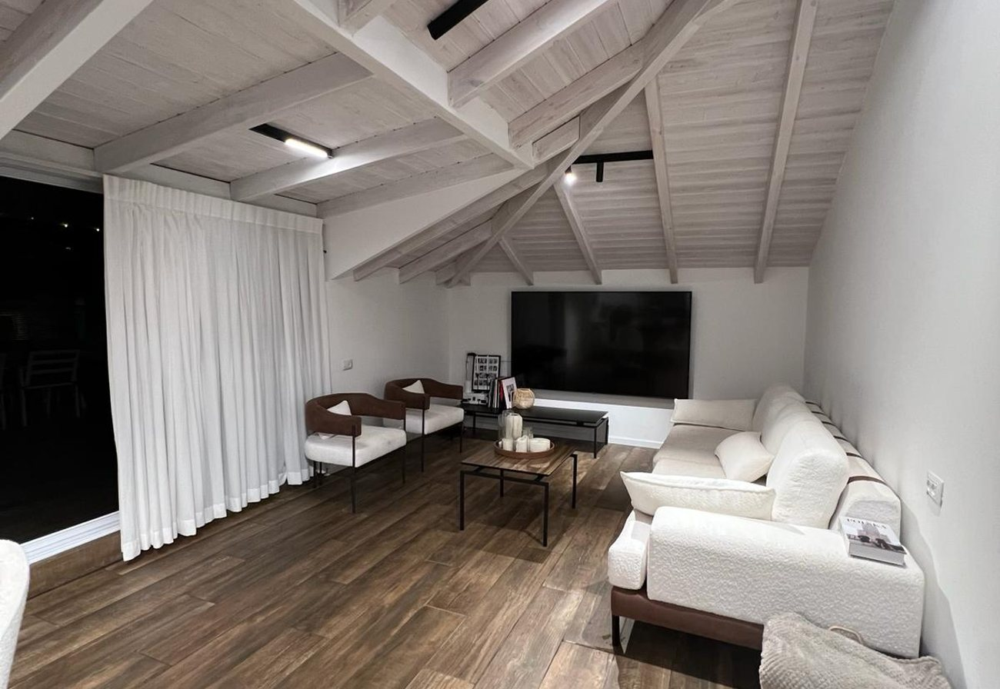
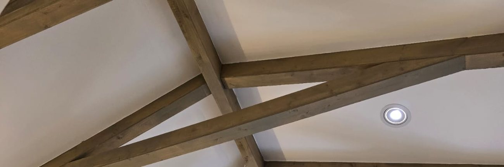
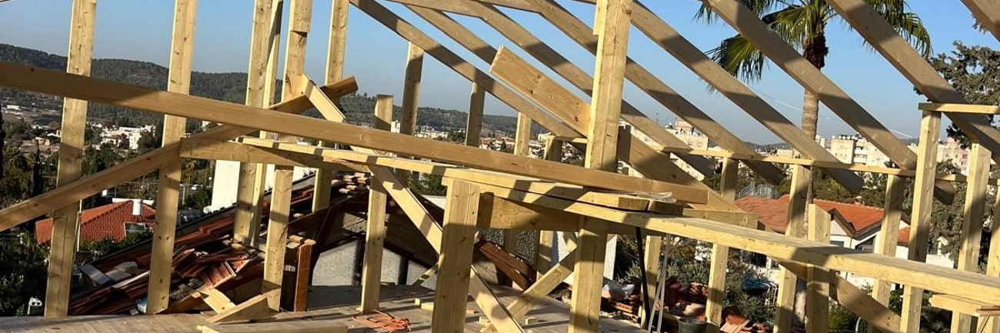
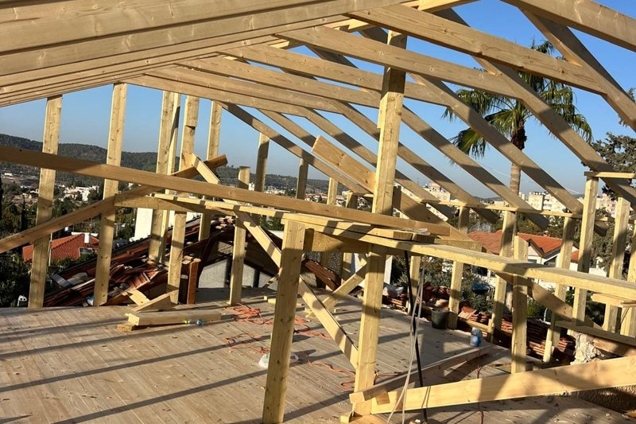
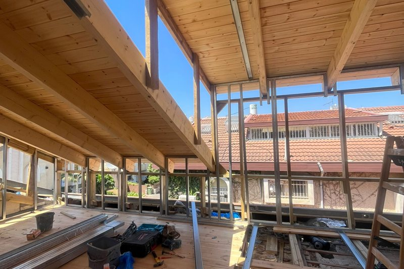
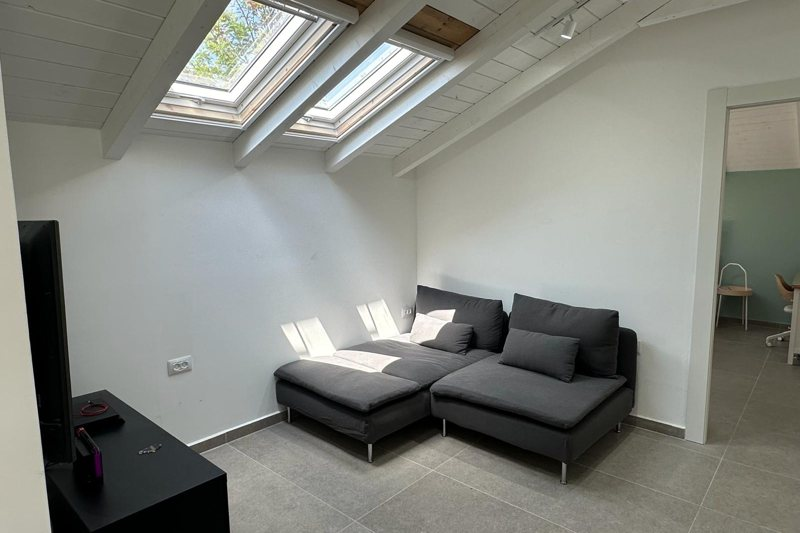
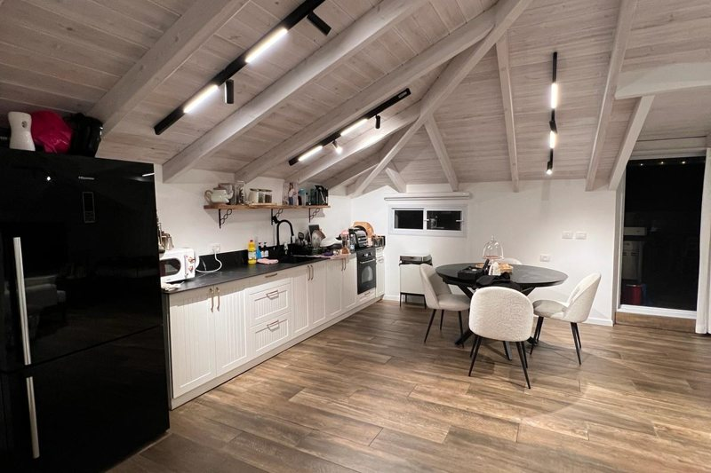
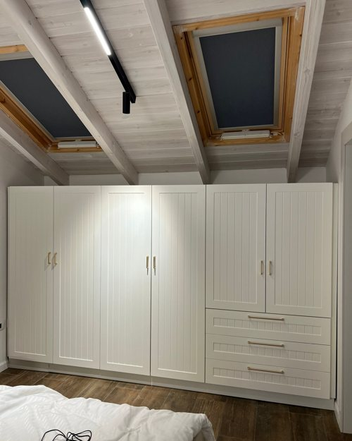
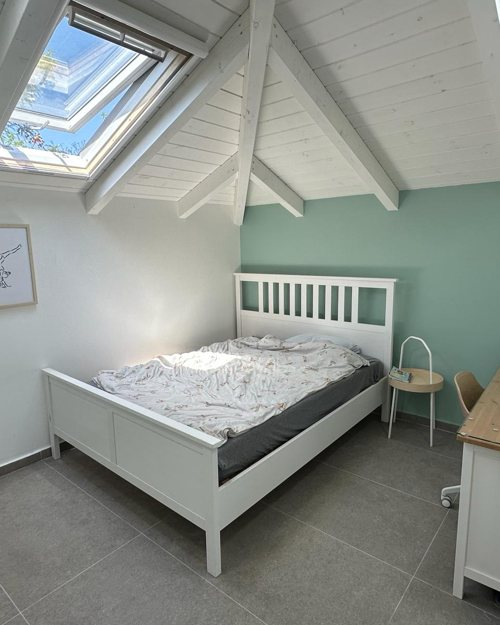
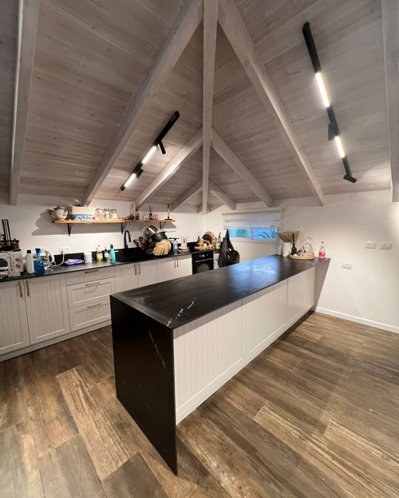

Company profile · Building method
בתים פרטיים · תוספות בנייה · עליות גג
בונים אחרת.חיים טוב יותר.
בנייה מתקדמת של בתים פרטיים, בהתאמה מלאה לתכנון האדריכלי. גורם ביצוע אחד, מהכלונס הראשון ועד הרעף האחרון.

01 / The company
הגישה שלנו
בית אחד.כתובת אחת.
התכנון שלכם, הביצוע שלנו, מהיסודות ועד הגג. פיתוחי חותם מרכזת את עבודות השלד, הגמר, הפיתוח והגגות תחת גורם ביצוע אחד.

כל פרויקט מלווה על ידי מהנדס מוסמך מטעם החברה, והנהלת החברה נוכחת באתר לאורך כל שלבי הביצוע, מיציקת היסודות ועד מסירת המפתח.
כל עבודות הבנייה מרוכזות תחת גורם מבצע אחד, בתיאום מלא בין שלבי הביצוע ובהתאם לתכולת עבודה שמוגדרת מראש.
שיטת הבנייה מתוכננת לקצר את משך העבודה באתר ואת תקופת העסקת הצוותים. לוחות הזמנים והעלות נגזרים מאופי הפרויקט והיקפו.
השלד מוקם באתר, ולכן ניתן לבחון את החללים במידותיהם בפועל ולהטמיע שינויים, בכפוף לתכנון ולאישורים הנדרשים.
אצלנו הגג אינו רק כיסוי לבית. אנו מתכננים ובונים אותו כחלל שמשביח את הנכס: תקרות גבוהות, גגות רעפים חשופים ועליות גג שהופכות למרחב מגורים, לצד הקמה, שיקום ואיטום.
בסיס בטון, ממ״ד וקירות בשכבות כפולות, כחלק אינטגרלי ממעטפת הבנייה.
בתים פרטיים בני עד שלוש קומות כולל מרתף, תוספות בנייה, והסבת עליות גג לחלל מגורים נוסף בבית קיים.
02 / Construction
שיטת הבנייה
הנדסה מתקדמת.ביצוע מדויק.
תהליך בן חמישה שלבים, מהתשתית הראשונה ועד הגג ופיתוח החוץ.

קידוח כלונסאות, יציקת רצפת בטון והקמת ממ״ד מבטון. בשלב זה מבוצעים גם חומה היקפית, בורות ביוב, פילר חשמל ותשתיות הבית.
הקונסטרוקציה מוקמת באתר על פי התוכנית: פלדה דקת דופן בשילוב עץ ופרופילי גבס מחוזקים.
לוחות גבס כחול לחוץ, רשת, דבק צמנטי, טיח ושליכט צבעוני. פירוט השכבות בהמשך.
שתי שכבות גבס ירוק בקירות המעטפת; מחיצות גבס ירוק כפול עם בידוד קנאוף בדחיסות 36 ק״ג לפי מפרט החברה. צנרת פקס ואינטרפוצים של גרואה או חמת, חשמל ותאורה שקועה לפי התוכנית, תיאום וחיבור מול חברת החשמל, ריצוף וחיפויים.
גגות רעפים, בטון או גג גושני חשוף, כולל איטום. פיתוח סביב הבית: חומה, ריצוף חוץ, שבילי כניסה יצוקים, פרגולות ודקים.
משך הקמה מוערך של בית, על סמך ניסיון החברה ובהתאם להיקף הפרויקט ולתנאיו. אין בכך התחייבות ללוח זמנים.
החומרים, התכולה והביצוע נקבעים לפי התכנון והמפרט המאושרים של הפרויקט.
03 / Building envelope
מפרט מעטפת
איכות שמתחילהמבפנים.
שכבות הקיר החיצוני, מהגמר החיצוני ועד פנים הבית.
תרשים שכבות סכמטי להמחשה בלבד · אינו פרט ביצוע הנדסי
- 01שליכט צבעוני בגוון ובטקסטורה לבחירה
- 02פריימר לשליכט
- 03טיח החלקה (קזנובה)
- 04דבק צמנטי עם רשת אינטרגלאס מודבקת
- 05לוחות גבס כחול לחוץ
- 06שלד מפלדה דקת דופן ועץ
- 07שתי שכבות גבס ירוק בצד הפנימי
שילוב של שלד קל, גמר חיצוני בשליכט וקירות פנים בגבס כפול. ההרכב המלא מוצג כאן בשקיפות מלאה, כדי שתדעו ממה בנוי כל קיר בבית.
ההרכב הסופי, עובי השכבות, החיבורים ופרטי הביצוע נקבעים על פי התכנון ההנדסי והמפרט של הפרויקט.
04 / Attic conversion
עליות גג
מרחב חדש.באותו הבית.
החלל שמתחת לגג הרעפים יכול להפוך לסוויטת הורים, לחדרי ילדים או ליחידת דיור נפרדת, בלי לעבור דירה.




בחינת החלל והמבנה הקיים, ואפיון האפשרויות לניצולו.
חלוקת חללים, חלונות גג, חדרי רחצה ומטבח, ואומדן לפרויקט.
שלד, חלונות, חשמל, אינסטלציה וגמר. העבודה מתבצעת מעל הבית הקיים, ככל הניתן.
רוב הפרויקטים מושלמים בתוך כ־40 יום מתחילת הבנייה, על סמך ניסיון החברה ובהתאם להיקף הפרויקט ולתנאיו.
מימוש עליית הגג כפוף לבדיקת היתכנות, תכנון, היתר ככל שנדרש ואישור הנדסי.
05 / Projects & contact
ניסיון בשטח
מבית קיים.לאפשרויות חדשות.
מבחר פרויקטים של עליות גג שביצעה החברה ברחבי הארץ.



החברה פועלת עם ביטוח קבלנים, עובדים מורשים ותעודות הרישוי הנדרשות, ומעניקה אחריות על העבודה בהתאם לתנאי ההתקשרות. החברה עובדת מול חברות הביטוח.
פגישת ייעוץ אישית וקבלת אומדן ראשוני לפרויקט. אדריכלים, מהנדסים ויועצים מוזמנים לפנות אלינו לשיתוף פעולה בביצוע הפרויקטים שתכננו.